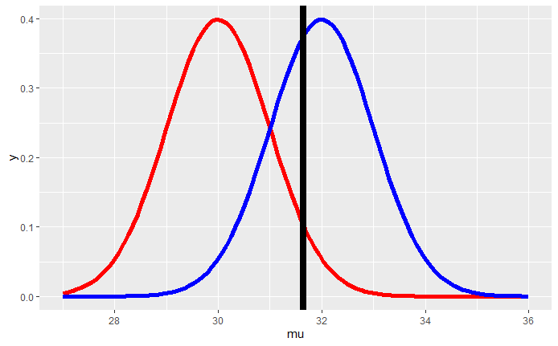
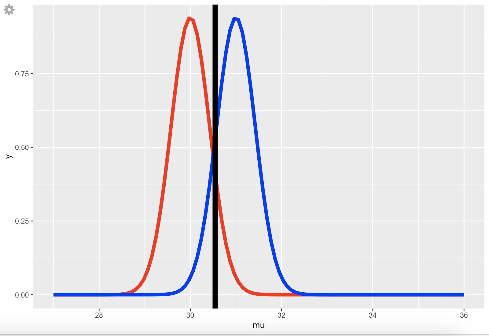

# Sample data
group1 <- c(170, 165, 180, 175, 160)
group2 <- c(155, 160, 165, 170, 175)
# Observed difference in means
obs_diff <- mean(group1) - mean(group2)
# Combine data
combined <- c(group1, group2)
n1 <- length(group1)
n2 <- length(group2)
# Resampling
set.seed(123)
n_iter <- 10000
resampled_diffs <- numeric(n_iter)
for (i in 1:n_iter) {
resampled <- sample(combined, length(combined), replace = FALSE) # sample without replacement
resampled_diffs[i] <- mean(resampled[1:n1]) - mean(resampled[(n1+1):(n1+n2)])
}
# Empirical p-value
empirical_p_value <- mean(abs(resampled_diffs) >= abs(obs_diff))
empirical_p_valueSIRE506 - L05
House Keeping
- Last week on hypothesis testing: t-test vs chi-square
- Titanic assignment reflection.
What is power?
| Truth | Verdict | Stat Test Result | Error |
|---|---|---|---|
| \(H_0\) | \(H_0\) | Accept T \(H_0\) | - |
| \(H_0\) | \(H_a\) | Reject T \(H_0\) | Type I error |
| \(H_a\) | \(H_a\) | Reject F \(H_0\) | - |
| \(H_a\) | \(H_0\) | Accept F \(H_0\) | Type II error |
- \(\alpha\) = Type I error
- \(\beta\) = Type II error
Type I error
Starting with the \(t_{1-\alpha, n-1}\) threshold under \(H_0\) (the red curve)
We reject \(H_0\) if \(\frac{\bar X - 30}{\sigma /\sqrt{n}} > t_{1-\alpha,n-1}\)

Type II Error (\(\beta\))
- Power = \(1-\beta\) = The probability that the observed statistic is as extreme or more extreme than the \(\alpha\) threshold given the alternative hypothesis is true. \[P\left(\frac{\bar X - 30}{s /\sqrt{n}} > t_{1-\alpha,n-1} ~;~ \mu = \mu_a \right)\]
Power Slider
- Check the code on Github
- Need to run the source code in RStudio console to adjust the parameters

Experimenting with the Power Slider
- Find the gear icon and adjust the following parameters, notice how power is affected:
- Reduce \(\alpha\) to 0.01
- Increase \(\alpha\) to 0.1
- Reduce Sigma
- \(H_0\) overlap less with \(H_a\) –> Higher power
- Increase Sigma –> Power decreases
- \(H_0\) overlap more with \(H_a\) –> Lower power
Experimenting with the Power Slider
- What if \(\mu_a\) is further to the right?
- Power also increases!
- Normally, large difference is easier to detect!
Calculating Power
- How much power will we get for a given sample size N?
- How many samples will we need to obtain 90% power?
power.t.test(n, delta, sd = 1, sig.leve = 0.05, power)- Compute the power of the one- or two- sample t test
- Need 2/3 parameters
power.prop.test(n, p1, p2, sig.level = 0.05, power)- need 3/4 parameters
Multiple Testing Problems
- FWER: Family-wise error rate
| True \(H_0\) | True \(H_a\) | Total | |
|---|---|---|---|
| Significant Test | FP | TP | Positive Test |
| Not Significant Test | TN | FN | Negative Test |
| \(n_{H_0}\) | \(n_{H_a}\) | N |
- Bonferroni correction (p/N)
False Discovery Rate (FDR)
- ordered p-value (small to large: i = 1 .. m)
- Significant Threshold: \(p_i < \alpha \times i/m\)
- Benjamini & Hochberg (BH): Tests are independent
- Benjamini & Yekutieli (BY): Tests are correlated.
Adjusted p-value
p.adjustadjusted toward 0.05 level- q-value
More advance topics
- Bootstrap resampling: handling small sampling errors
- Review the video from Coursera
- sampling with replacement to N (same as the original sample size)
- Goal: try to estimate the statistic property of the current sample size
- Jackknife: use n-1 to do the estimate (bootstrap approximation)
Nominal p-value vs empirical p-value
Empirical p-value is calcualted based on the distribution of the test statistic obtained through resampling methods, such as bootstrapping or permutation testing Nominal p-value is calculated based on the thoretical distribution of the test statistic un der the null hypothesis
To obtain an empirical p-value 1. Perform the test under the simulated null distribution - Example: Do permutation testing by reshuffling of case-control status 2. Compare the observed test statistic from the observed data to the null from permutation data. 4. Also called exact test for getting the p-value - Popular known variants of this permutation test e.g. Fisher Exact Test or Rank-Sum test
Empirical p-value example
To obtain an empirical p-value when comparing the height between two groups, you can follow these steps:
1. Formulate Hypotheses:
- Null Hypothesis (\(H_{0}\)): There is no difference in the average height between the two groups.
- Alternative Hypothesis (\(H_{a}\)): There is a difference in the average height between the two groups.
2. Collect Data: Gather height measurements for both groups. Ensure that the data is collected randomly and independently.
3. Calculate the Test Statistic: Compute the difference in means between the two groups. This can be done using a t-test or another appropriate statistical test.
4. Resample Data:
- Combine the data from both groups into a single dataset.
- Randomly shuffle the combined dataset and split it into two groups of the same sizes as the original groups.
- Calculate the difference in means for these resampled groups.
- Repeat this resampling process many times (e.g., 10,000 times) to build a distribution of the test statistic under the null hypothesis.
5. Calculate the Empirical p-value:
- Determine the proportion of resampled test statistics that are as extreme or more extreme than the observed test statistic from the original data.
- This proportion is the empirical p-value.
Empirical p-value example in R:
This code calculates the empirical p-value by comparing the observed difference in means to the distribution of differences obtained through resampling.